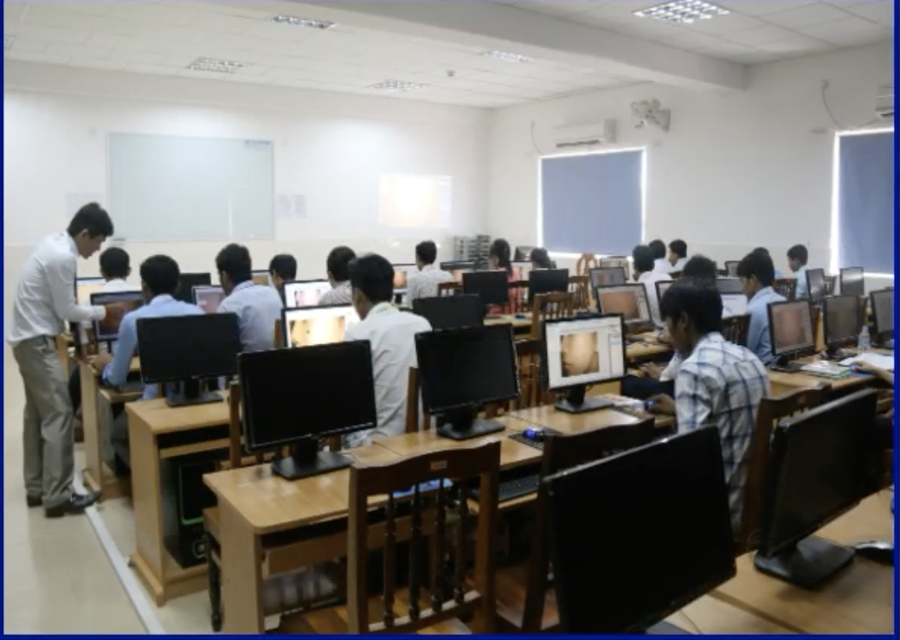
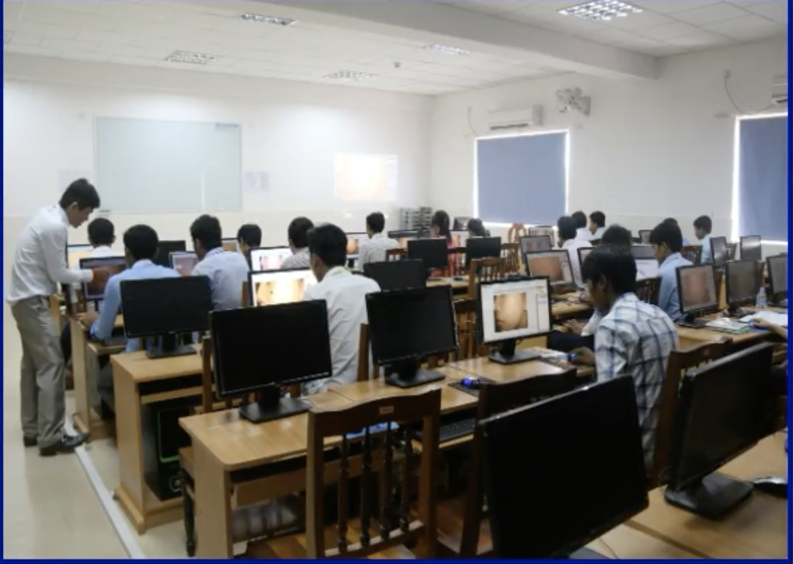

Welcome to College of Science and Technology of The University of Cambodia. For everyone who wishes to pursue for any AA and BA degrees of the study programs, please register now or visit the campus of The University of Cambodia. College of Science and Technology at The University of Cambodia. The College of Science and Technology (CoST) was established at the same time as the The University of Cambodia in 2013. The College have been developed and transforms with the rise of Science and technology in the 21st century. We drive and inspire our students to value creativity and innovation in the information technology world. The college offers undergraduate and graduate programs such as Computer Science, Information Technology and Electronics and Telecommunication. Our programs prepare students for careers in these disciplines as scientific and ICT professional. In order to meet increasing demand for graduates in computer science and information technology, we have: developed robust and modern curricula; established sophisticated facilities; and hired high qual...

Welcome to College of Science and Technology of The University of Cambodia. For everyone who wishes to pursue for any AA and BA degrees of the study programs, please register now or visit the campus of The University of Cambodia. College of Science and Technology at The University of Cambodia. The College of Science and Technology (CoST) was established at the same time as the The University of Cambodia in 2013. The College have been developed and transforms with the rise of Science and technology in the 21st century. We drive and inspire our students to value creativity and innovation in the information technology world. The college offers undergraduate and graduate programs such as Computer Science, Information Technology and Electronics and Telecommunication. Our programs prepare students for careers in these disciplines as scientific and ICT professional. In order to meet increasing demand for graduates in computer science and information technology, we have: developed robust and modern curricula; established sophisticated facilities; and hired high qual...
| Majors | Associate,Bechelor | Master , PhD |
|---|---|---|
| Computer Science (Offering) | AA and BA | MS and PhD |
| Information Technology (Offering) | BA | MS |
| Electronics and Technology (Offering) | BA | MS |


| Multimedia Lab | E-learning Lab | Networking Lab | IT-Center Lab |
|---|---|---|---|
| Graphic Design | Graphic Desing | Networking Desing | Computer Applications |
| Computer Applications | Produce Videos Contents | Web Development | Computer Programming |
| Mobile Applications | Computer Applications | Network Security | Database Development |